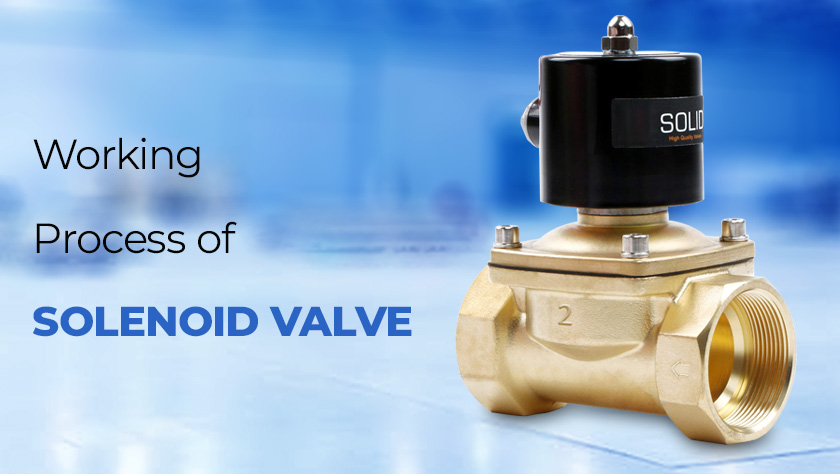

Open hours: Monday - Sunday 8:00AM - 9:00PM
A solenoid valve is an electro-mechanical valve that can be used to control the flow of liquid or gas. The main components of the solenoid valves consist of a valve stem, valve disc, valve body, valve boot, valve seat, stop washer, centring washer, plunger, coil, and a cover nut. It is commonly used in hydraulics & pneumatics to shift two way and 3-way directional control valves and some pressure control valves. The basic function of the solenoid valve is to shut off, distribute, and release fluid.

The main functional components of solenoid valves are the coil, plunger, and sleeve assembly. When the orifice in the solenoid valve is open, then it allows the flow of fluid. However when it is closed, then it prevents the flow through the valve. To open the orifice of a solenoid valve plunger is used, which raises or lowers within the sleeve tube by energizing the coil. Once the solenoid coil is energized, the resultant magnetic field raises the plunger, enabling the flow. When the solenoid coil is energized in a normally open valve, the plunger seals off the orifice, which in turn prevents flow.
It consists of a movable armature made of an iron alloy and attached to the valve needle, all sealed into the valve body. The coil is wound around the valve housing that contains the armature. The solenoid valve can be activated by a thermostat as well. Sare used to control the temperature of a refrigerator or a room.
Any requirement for the solenoid valve, feel free to contact us. We as SKG Pneumatics – distributor and suppliers of industrial valves provide a wide range of valves and fire fighting equipment from the best makers of the industry.